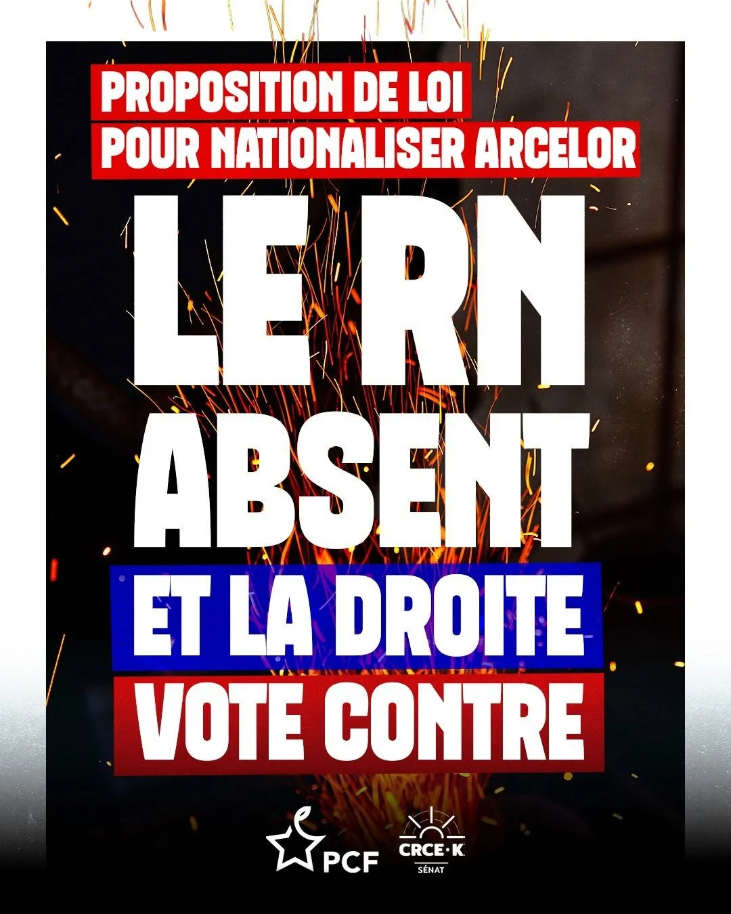

Publication relayée par le PCF 79
ArcelorMittal. Le PCF réagit au rejet de la proposition de nationalisation au Sénat
Date de mise à jour indiquée par Facebook · 28 février 2026
Texte de la publication · PCF national et sénateurs communistes
❌️ La droite a rejeté la proposition de nationalisation d’ArcelorMittal au Sénat, tandis que le Rassemblement national a brillé par son absence.
Le texte est donc rejeté et révèle l’hypocrisie de ceux qui prétendent défendre l’industrie française mais refusent d’agir concrètement pour sauver nos emplois, nos sites et notre souveraineté.
💰 Quand il faut choisir entre les intérêts financiers et l’intérêt national, ils choisissent les intérêts financiers !
Nous continuerons nous, aux côtés des salariés, à porter l’exigence d’une nationalisation pour préserver notre industrie et l’avenir des travailleurs.

Sources
PCF national et sénateurs communistes · publication relayée par le PCF 79 · bibliothèque Facebook · AR-0002-FB-00853
À lire aussi · ArcelorMittal. Une conférence de presse avant le vote au Sénat